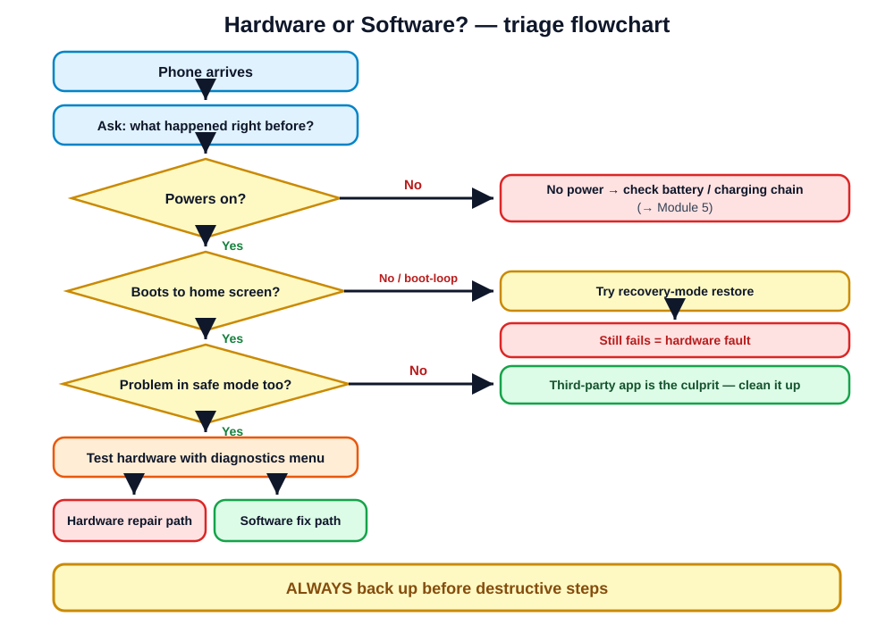

No screwdriver required: fixing the faults that live in the code.
Day 5 of 5 · morning block · ~1 h theory · bench practical · quiz
Open with the punchline early: "This is the most profitable module in the course — software fixes cost you zero parts." Ask who has ever 'fixed' a phone by restarting it. That IS software repair; today we make it systematic.
Point at the last bullet and say it will get its own slide with a red border, and it's the one part of today that is absolutely non-negotiable. Setting that up early makes the ethics slide land harder.
A tech who only thinks in hardware replaces a screen on a phone that needed a cache wipe. The customer pays for parts they didn't need — and eventually figures that out.
Story time: the classic is the "dead" phone that's a drained battery plus a broken charger cable — two minutes with a known-good cable "resurrects" it. Diagnosing software FIRST protects customers from unnecessary hardware charges and protects your reputation. Rule: cheapest hypothesis first.
"It just started by itself" is almost never true. Keep asking gently — the answer is usually in there.
Roleplay: be a vague customer ("it's just being weird"). Show how each question narrows the tree: 'right after an update' → software, likely OS; 'after installing a game' → rogue app, safe mode will prove it; 'after the beach' → back to Module 8. Five questions typically save an hour of blind testing.
Factory resets, reflashes, and restores erase everything. A wiped wedding album, the last photos of a relative, years of business contacts — gone, unrecoverable, your fault.
One wiped photo library can end a repair business.
Tell this as the module's cautionary tale — a real shop somewhere has been sued or destroyed on social media over exactly this. Rule to drill: the words "factory reset" never happen on a customer device without either a verified backup or a signature. Connect to Module 10's intake form, which has the consent line built in.

This flowchart is the spine of the module and hangs at every practical station. Walk it once fully: Does it power at all? → No: charge with known-good cable 15 min, then hardware path. Yes → Does it reach the boot logo? → Does it finish booting or loop? → Does the fault survive safe mode? Each branch is a slide coming up.
| Question | If NO | If YES |
|---|---|---|
| Any sign of power? (vibrate, light, sound) | Charge 15 min w/ known-good charger → still nothing = hardware | Continue ↓ |
| Reaches boot logo? | Power/board fault likely — hardware path | Continue ↓ |
| Finishes booting (no loop)? | Boot loop → software restore first (slide 14) | Continue ↓ |
| Fault gone in safe mode? | Fault persists → OS or hardware | A third-party app is the culprit |
Emphasize the discipline: answer each question with a TEST, not a guess. "Any sign of power" includes plugging into the USB ammeter from Module 1 — current draw means the board is alive even with a dead screen. That single reading separates "dead phone" from "dead display" instantly.
Safe mode is a free, non-destructive, five-minute test. It should be one of your first moves on crashes, freezes, popups, and battery drain.
Demo live on the classroom Android: show the "Safe mode" watermark in the corner and that Instagram/games are greyed out. Stress non-destructive: no data is touched, so no backup needed for this step — which is exactly why it comes before resets in the flowchart.
resources/videos.mdPlay Video 9.1, then demo recovery mode on the donor Android: navigate with volume keys, select with power. Order of escalation matters: forced restart → wipe cache → factory reset. Each step is more destructive than the last; you climb the ladder, never jump to the top rung.
Course level: know it exists, know when it's the answer, and either learn the exact procedure for that model carefully — or refer out. Never flash firmware casually.
This is demo-level awareness, not a hands-on skill today. Show the fastboot screen on the donor phone and a flash tool UI on the projector if available. The learning point: "factory reset failed" is not the end of the software path — reflash exists. But wrong-region firmware or a cable pull mid-flash makes things worse, so respect it.
Memorize the 8-and-later combo: up, down, hold. It covers almost every iPhone you'll see.
Have everyone perform the combo on the classroom iPhones right now — the timing (quick press, quick press, long hold) takes two or three tries to get. Common customer confusion: they hold all buttons at once and get the SOS/power-off screen instead.
| Recovery mode restore | DFU restore | |
|---|---|---|
| How | Force-restart combo, keep holding while connected to a computer | Precise timed button sequence; screen stays black |
| What runs | Loads the recovery OS | Device Firmware Update — lowest level, before the OS loads |
| Options | Update (reinstall iOS, keep data) or Restore (wipe) | Full firmware rewrite — always wipes |
| Use when | Boot problems, failed updates | Recovery mode itself fails |
Always try Update before Restore — Update keeps the customer's data.
resources/videos.mdPlay Video 9.2, then demo recovery mode live with the classroom laptop. The Update-vs-Restore distinction is a guaranteed quiz question and a real data-saver: Update rescues most boot-looping iPhones without touching data. DFU's black screen confuses beginners — "nothing is happening" is what success looks like; the computer confirms detection.
These two checks solve most "slow phone" walk-ins in minutes — check them BEFORE quoting a new battery. Connect to Module 5: battery health tells you if the battery is genuinely worn; the battery usage screen tells you if software is wasting a healthy one. Charge for the diagnosis either way — knowledge is the product.
The restore attempt IS the diagnostic: software fixes it, or its failure proves hardware.
Reframe restores as a diagnostic instrument, not just a fix — computer restore tools report error codes when they hit hardware faults (e.g. iTunes/Finder errors pointing at NAND or power ICs). Note the classic hardware-caused loop: a failing battery that sags under boot load. If a loop "fixes itself" while plugged in, suspect the battery, not the software.
*#0*# on many Samsungs)Demo the Samsung *#0*# menu live if you have one — the class loves the full-screen color and touch-grid tests. On iPhone, show Settings → Privacy → Analytics Data and point out "panic-full" files: a repeated panic log is a strong board-fault clue. These menus turn "I think the touch works" into "touch verified on a 100% grid".
resources/videos.mdPlay Video 9.3, then have every student install the chosen test app on a bench phone and run the full sweep once — they'll use it in the practical and the final exam. Business angle: a saved intake test report is your proof that the microphone was already dead when the phone arrived for a screen job.
Bypassing locks can be a crime — and it makes you the fence for every thief in town. Your license and reputation die here.
Slow down and make eye contact — this is the one slide where you play the hard line. Script for the class to memorize: "I can only unlock a device for its verified owner signed into their own account. If it's locked to someone else's account, I can't help — no exceptions." Someone WILL test them within their first month of trading. Refusing loses one sale; accepting can lose everything. This appears on the final written exam.
"YOUR PHONE HAS 7 VIRUSES!" popups are mostly browser notification spam — a website the user granted permission to. Fix: clear that site's notification permission & browser data. Two minutes.
Sideloaded APKs, fake "cleaner" apps, apps with device-admin rights. Fix: safe mode → revoke device-admin → uninstall → full scan; factory reset (with backup!) if entrenched.
Demo the fix path on Android: browser settings → site settings → notifications → block the spam site. Teach customers the prevention line: "Never tap Allow on a website's notification prompt you didn't ask for." Real malware clue: an app you can't uninstall normally usually has device-administrator rights — revoke those first in security settings, then it uninstalls.
Class: listen for anything missed — you're the reviewers.
For #3, push back like a real customer would ("come on, it's just sitting in a drawer, nobody will know"). The student must hold the line politely and firmly. If #1 is shaky, walk the flowchart on the projector once more before the practical — the whole lab depends on it.
| Station | Planted fault | Expected path |
|---|---|---|
| A | Rogue app causing crashes & drain | Safe mode proves it → identify & uninstall |
| B | Storage crammed above 95% | Storage check → clean up → verify speed |
| C | Corrupted phone that needs recovery-mode reset | Backup/consent → recovery mode → verify |
| D | Hardware red herring | Flowchart correctly says "NOT software" — refer to hardware repair |
Run the flowchart, document findings & fix, and write a customer-style report. Worksheet: practicals/practical-09-software-diagnostics.md
Don't reveal which station has the red herring — recognizing "this is NOT software" is the highest-value skill being graded. Grade the paperwork as hard as the fix: findings, steps taken, and a customer-readable report. Rotate pairs roughly every 40 minutes. Watch station C for anyone resetting without the consent step — instant rubric deduction.
Next: Module 10 — turning your skills into a business.
Hand out the Module 9 quiz from assessments/module-quizzes.md. While they take it, review the station reports. Preview Module 10: "You can now fix phones. Next session: how to get PAID to fix phones — and pass the final." Remind them the final exams are coming; nerves drop when the format is known early.